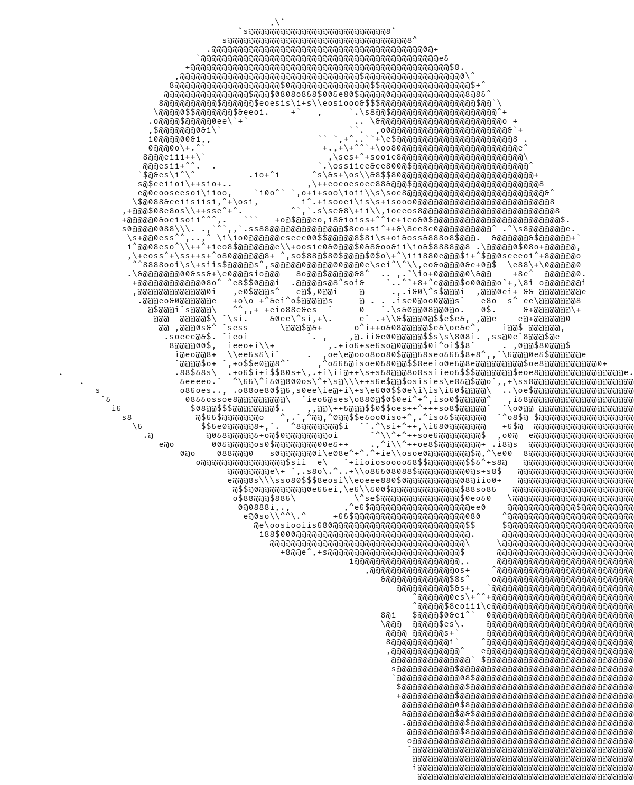
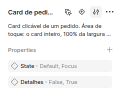
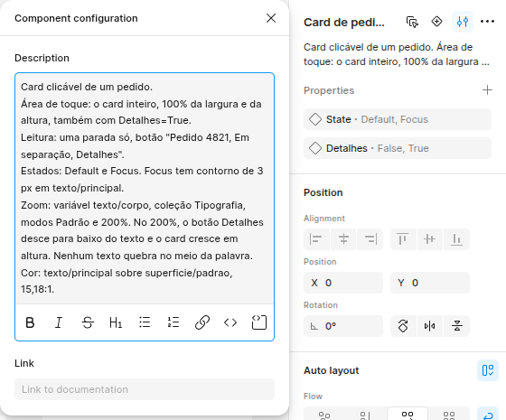
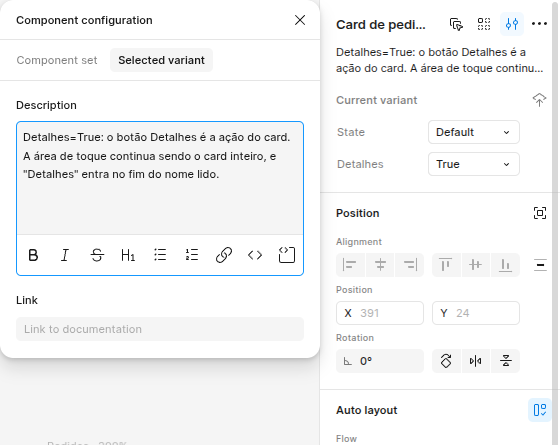
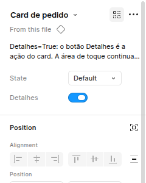
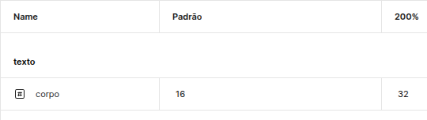
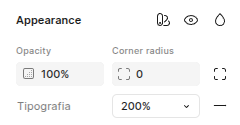
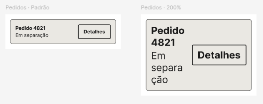
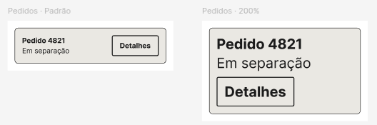

Design system pronto para o agente
O agente do Figma lê a descrição de cada componente antes de desenhar ou avaliar. O que está escrito vira regra. O que falta vira pergunta, e a pergunta segura o handoff.
Onde escrever
- No conjunto de variantesO que vale para todas as variantes: papel, área de toque, leitura, estados, zoom e cor.
- Na varianteSó o que muda nela.
- Nas variáveisOs tokens que o componente usa e o que ele faz em cada modo.
- Nas guidelines da bibliotecaO que vale para mais de um componente.
1 de 4 · no conjunto
Descreva o conjunto
O conjunto guarda o que vale para todas as variantes. Escreva uma linha por regra, com o nome da regra no começo da linha.
Abra o arquivo da biblioteca e selecione o conjunto, pela borda roxa que envolve as variantes. Não selecione uma variante só.
No painel Design, à direita, clique em Component configuration, o ícone ao lado do nome do conjunto.

Component configuration é o ícone de ajustes, o terceiro ao lado do nome. Escreva no campo Description a partir do modelo. Troque o que está depois de cada nome de regra pelo comportamento do seu componente, e clique fora do painel para salvar.

O campo aceita formatação: negrito, título, listas, link e código. Modelo para copiarPapel: card clicável, botão, link ou campo. Área de toque: o que se toca, e o tamanho. Leitura: o que o leitor de tela lê, em ordem. Estados: as variantes de estado que existem. Zoom: a coleção, os modos e o que muda em cada um. Cor: as variáveis de texto e de fundo.EviteCard de pedido.O agente não sabe se o card é tocável nem o que ele lê. Então ele pergunta, e o handoff espera a resposta.
2 de 4 · na variante
Descreva a variante só no que muda
A variante herda o que o conjunto diz. Escreva nela só a diferença. Se nada muda, deixe o campo vazio.
Selecione a variante dentro do conjunto.
Em Component configuration, abra a aba Selected variant e escreva o que esta variante faz de diferente.

A aba Component set, ao lado, abre a descrição do conjunto. Confira o que quem usa vai ver. A descrição aparece embaixo do nome da instância, no painel Design, e é ali que o agente também lê.

Ali aparece o começo da descrição, e o texto inteiro abre na janela de documentação.
3 de 4 · nas variáveis
Ligue o componente às variáveis e diga os modos
Zoom, tema e densidade costumam ser modos de variáveis. Se a descrição não cita o modo, o agente não sabe que precisa olhar o componente nele.
Ligue o tamanho do texto a uma variável, numa coleção com um modo para cada nível de zoom do seu design system. O WCAG pede que o texto chegue a 200% sem perder conteúdo nem função.

Cada modo é uma coluna, e cada variável guarda um valor por modo. Selecione uma tela com o componente e troque o modo em Appearance, no painel Design.

O modo vale para a tela inteira e para tudo dentro dela. Olhe o componente em cada modo, decida o que ele faz e escreva isso na linha Zoom do conjunto.

Antes. 
Depois. PrefiraZoom: variável texto/corpo, coleção Tipografia, modos Padrão e 200%. No 200%, o botão Detalhes desce para baixo do texto e o card cresce em altura. Nenhum texto quebra no meio da palavra.EviteSuporta zoom.Não diz a coleção, nem os modos, nem o que muda. O agente não tem o que conferir.
4 de 4 · nas guidelines
Regras de vários componentes vão para as guidelines
Uma regra que vale para mais de um componente não se repete em cada descrição. Ela vai uma vez para as guidelines de acessibilidade da biblioteca.
Escreva as regras num arquivo Markdown, uma por linha.
Exemplo para copiarCard com uma ação dentro é uma parada só. O nome lido termina com a ação. Ícone sozinho é botão, e o nome dele está na descrição do componente. Todo texto usa as variáveis da coleção Tipografia e cresce até o modo 200% sem corte.Na biblioteca, envie o arquivo em Library, depois Manage guidelines. O recurso está em beta e pede plano Professional, Organization ou Enterprise.
Depois
Confira com o agente
O handoff mostra onde ainda falta descrição.
Selecione o componente e peça ao agente:
Pedido/da11y prepare o handoff deste componenteNa página DA11Y — handoff, cada descrição que falta vira um card, com o texto sugerido e o lugar onde ele entra.
O agente não grava no design system. Você revisa o texto e cola no lugar que o card indica.